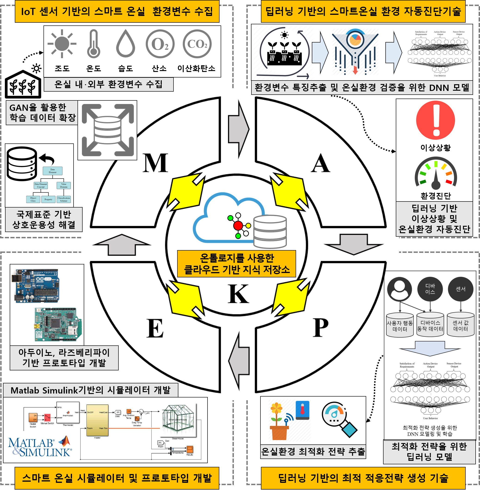

I. Friendship-based personalized recommender system (memory-based approach)
Classified the features of social big data for memory-based approach to calculate similarities and preference values
Three main properties are proposed, such as "Contents generated by users", "Relationship information", and "Interaction information"
Friendship strength is an approach for measuring closeness between users that considers classified features of social big data
II. Friendship-based personalized recommender system (model-based approach)
Applying friendship strength to a model-based approach, such as Probabilistic matrix factorization (PMF), Tensor factorization, and Convolution neural network (CNN)
III. Group recommendation based on aggregation method
The deviation is combined with Avg and AV in the UL
IV. Group recommendation based on matrix factorization
Group recommendation system via matrix factorization utilizing matrix factorization techniques to discover groups and find the preferred items quickly
Group recommendation system via tensor factorization utilizing 3-dimension matrix (group x item x aggregation method) to find the best combination of aggregation methods
Text Mining based on Entity Linking
I. Entity linking for short textual data (complete)
Extended the corpus of target users to utilize data from highly similar users and improve the linking accuracy
II. Entity linking for short textual data (future)
Discovering a set of similar short textual data, not users
Unnecessary short textual data is not included in the data set, which is regarded as a corpus, only contain relevant data in a corpus
The meaning of entity is extracted by this corpus
Big Data Analytics
I. Fine dust data analysis
Visual analytics for fine dust data analysis to make a fine visualized website
Measuring correlations between fine dust and various diseases
Predicting fine dust concentration and the diseases caused by fine dust
Smart Farm
I. Smart fram software (future)
Development of smart farm focusing on software
Propose a self-adaptive smart farm system based on MAPE-K model
Utilizing IoT, Deep learning, Cloud technologies

A framework of self-adatptive smart farm based on MAPE-K